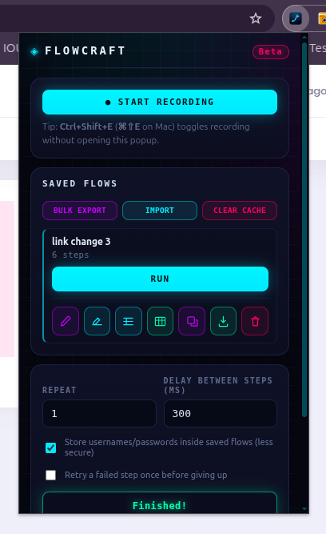

Flowcraft
User Manual
Record what you do in the browser, save it as a flow, and replay it — once, many times, or once for every row of a spreadsheet. No code, no account, nothing leaves your machine.
▸Guide for SQA
Build repeatable checks and bring back evidence.
Your workflow
TC-101 Login valid so the list reads like your test plan. Use Duplicate to branch a negative case (TC-102 Login wrong password) without re-recording.assertVisible / assertText at the end (Edit steps) so a wrong result actually fails.Writing a bug report from a failed run
- Title & buildName the flow and the app version/environment you ran against.
- Steps to reproduceOpen Edit steps — the ordered step list is your repro steps.
- Expected vs actualExpected = your assertion. Actual = the error line and the screenshot.
- AttachFailure screenshot (Save image) + Save this run JSON. Check the screenshot shows no private data first.
Pre-release smoke checklist
- Every critical path has its own flow (login, signup, checkout, search…)
- Each flow ends with at least one assertion
- Data files named exactly as their templates, one row per scenario
- “Store usernames/passwords” is off and test accounts are used
- Flows exported (bulk export) and shared with the team
- Retry-once enabled only for known-flaky steps, not to hide real bugs
CAPTCHA, 2FA and OTP will block automation — sign in manually, or use a test environment with those switched off. Run only against environments you're authorized to test.
Your workflow
id, then a unique data-testid / data-test / data-cy / data-qa / name / aria-label / placeholder, and only then a fragile tag path. Give interactive elements one of the first kinds and flows survive refactors.assertText for the correct behavior so the flow goes green only when it's really fixed.wait step or raise Delay.What an exported flow looks like
{ "app": "flowcraft", "version": 1, "exportedAt": 1760000000000, "flows": [{ "name": "Login and open dashboard", "startUrl": "https://app.example.com/login", "steps": [ { "type": "input", "selector": "#email", "value": "user@test.com", "secret": true }, { "type": "click", "selector": "button[type=submit]", "tag": "button", "text": "Log in" } ] }] }
Illustrative sample. The format is beta and may change between versions. Credential values are blanked unless “Store usernames/passwords” is on.
Hacking on Flowcraft itself
| No build step | Plain JS/HTML/CSS, no dependencies. Load unpacked and edit in place. |
| Reload loop | After edits, click the reload icon on the extension card. An open popup won't pick up new code. |
| Syntax check | node --check popup.js (and the other files) before opening a PR. |
| Where things live | content.js recorder · background.js service worker + replay engine · popup.* UI · xlsx-lite.js spreadsheet I/O. See Architecture. |
| House rule | No third-party code and no network requests — the extension has <all_urls> access. See CONTRIBUTING. |
| Keep out of Git | Exported flows, filled data sheets and run-history JSON can hold credentials or screenshots. |
Flows run from the extension in a real browser. Because the JSON is plain, it can be converted to Playwright or Selenium specs if you need headless runs.
▸Real-world use cases
Four ways teams actually use Flowcraft. Pick a tab.
QA records the bug once; the developer replays the exact path on their own machine. No “steps to reproduce” essay needed.
QARECORDS & SENDS
- Record the buggy path (Ctrl+Shift+E).
- End with an assertion for the expected result so the bug shows as a failure.
- Run it once to confirm it fails; grab the screenshot from Run history.
- Export the flow, and attach it with the screenshot to the ticket.
DEVIMPORTS & REPLAYS
- Open Flowcraft → Import → pick the JSON.
- Check the start URL in Edit steps points at your environment (localhost / staging).
- Click Run and watch the bug happen. On failure the run pauses so you can inspect the page.
- Fix, then Run again until the assertion passes.
• Credentials are blanked when you save unless “Store usernames/passwords” was on at that moment. A flow saved with it on keeps them even if you switch it off afterwards — re-record it with the option off before sending. Tell the dev which test account to use.
• Exports hold steps only, not screenshots or the data file. Attach the screenshot (or Save this run) separately.
• The dev's build must still have the same elements; if a selector changed, they can fix it in Edit steps.
Need 50 users, 200 orders or a pile of records to test with? Record creating one, then let a data file create the rest.
- Record “create one record”E.g. fill the sign-up form and submit. Save it as
Seed users. - Download the data templateClick . Columns:
Link, one per input selector, thenRepeat. - Generate the rowsUse the Excel generator below (or fill-down in Excel) so each row has unique values.
- Run with dataUpload the file under its exact template name, then Run data. One record is created per row.
Excel row generator
Builds a ready-to-fill .xlsx with the same layout the extension's own template uses (Link, then your selector columns, then Repeat), named correctly for your flow.
The Link column gives each row its own start URL. Put staging in some rows and qa in others to seed several environments from one file. Leave it empty to use the flow's own start URL.
This really creates records. Run it against staging or QA, never production, and check the app doesn't send real emails or payments.
A smoke suite is a short list of must-work paths, run before every release. Flowcraft has no “run all” button, so you build the suite as a set of named flows and run them in order.
- One flow per critical pathName them in order:
SMOKE-01 Login,SMOKE-02 Search,SMOKE-03 Add to cart… so the list sorts like a checklist. - End each with an assertion
assertVisibleorassertTexton something that only appears when the path worked. - Share the suiteBulk export all
SMOKE-*flows into one JSON; teammates Import it once. - Run top to bottomClick Run on each flow, in order, and tick it off. Check Run history for failures.
Try the suite tracker
- SMOKE-01 Login
assertVisible .dashboard - SMOKE-02 Search
assertText .results - SMOKE-03 Add to cart
assertText .cart-count - SMOKE-04 Checkout (test card)
assertVisible .confirm - SMOKE-05 Logout
assertVisible #login
Flows run one at a time from the popup in a real browser tab — no scheduler, no single-click suite run, no CI. If you need those, the exported JSON can be converted to Playwright or Selenium.
When a step fails, the run pauses instead of dying. A person fixes whatever blocked it, clicks the pill's ▶ button, and the same step is retried. Perfect for the parts a script can't do.
Pause + ▶ vs. the “Retry a failed step once” checkbox
| Checkbox | Pause + ▶ button | |
|---|---|---|
| Who acts | Nobody — automatic | You |
| What happens | Waits 500 ms, tries the step once more | Waits for you, then retries as often as needed |
| Best for | Brief flakiness on unattended runs | Problems a human has to fix |
| Together? | Yes. With the checkbox on, a step gets one automatic retry first; only if that also fails does the run pause for you. | |
It retries the same step — it can't skip ahead, and you can't edit the step while paused. Closing the tab ends the run. Press ■ to stop instead of retrying.
01Install
About two minutes. No build step, no store account.
- Get the codeDownload the ZIP from GitHub and extract it, or clone it:
git clone https://github.com/Soykat25/flowcraft-extension.git - Open the extensions pageGo to
chrome://extensions(Chrome) oredge://extensions(Edge), and switch on Developer mode in the top-right corner. - Load itClick Load unpacked and pick the Flowcraft folder (the one that contains
manifest.json). - Pin itClick the puzzle-piece icon in the toolbar and pin Flowcraft so its icon is always visible.
After pulling new code, click the reload icon on Flowcraft's card in chrome://extensions. An already-open popup won't pick up new code on its own.
02Tour of the popup
Interactive: click a yellow number or any icon to see what it does.
☐ Retry a failed step once
Select something
Click a numbered marker or an icon on the popup to see what it does.
The real thing

03Record a flow
Try the simulator: it behaves like the real recorder.
- Open your start pageThe page you're on becomes the flow's start URL.
- Press Start recordingThe popup closes and a small floating widget shows a live step count with a Stop button. Shortcut: Ctrl+Shift+E (⌘⇧E on Mac), no popup needed. Remap it at
chrome://extensions/shortcuts. - Use the site normallyFlowcraft captures clicks, typing, checkbox/radio toggles, Enter / Esc and native dialogs.
- Stop, name, saveGive it a unique name (case-insensitive). Edit steps lets you fix things before saving; Discard throws the recording away.
The recording widget
While you record, a small draggable pill sits on the page: a pulsing red dot, a live step counter and a red ■ stop button. Drag it by the grip so it doesn't cover what you're clicking; its own clicks are never recorded.
Try it
Record one scenario per flow and name it after the test case ID. Short flows fail clearly and are easy to re-record.
Add data-testid to the elements a flow touches. It survives restyling, so recorded flows keep working.
• Typed addresses, bookmarks and redirects become a Go to URL step, so replay follows the same pages.
• Starting on a blank new tab is fine — the first real page you open becomes the flow's start URL.
• Custom dropdowns (select2 and similar) are caught even when they swallow the normal click.
• File inputs are noted but the file itself isn't stored — see Good to know.
Prefer elements with a stable id, data-testid or name. Random or hashed class names make replay fragile.
04Run a flow
Replay a saved flow, with settings you control.
| Setting | What it does |
|---|---|
| Repeat | How many times a plain Run repeats. With Run with data it instead caps how many rows run (leave at 1 to cap nothing). It has no effect on Run data. |
| Delay between steps | Extra pause (ms) after each step, on top of built-in settling time. Raise it for slow or async pages. |
| Store usernames/passwords | Off by default. See Passwords. |
| Retry a failed step once | Off by default. On failure, waits 500 ms and tries that step exactly one more time before counting a failure. |
| Stop replay | Appears during a run and stops it after the current step. |
- Click RunFlowcraft prompts for any blanked username/password fields, navigates the active tab to the start URL (via
about:blankfor a clean load), then replays each step. - Watch the widgetThe popup closes and a floating widget shows
Run 2/5 · Step 8/12. See the widget below.
The floating run widget
While a flow runs, a small draggable pill appears on the page. It's your remote control — try it below.
When a step fails, the run pauses instead of dying. A red error line appears above the pill, and the status button lights up. Fix the page (or whatever blocked it) and click the button to retry that step, or press ■ to stop.
What “smart replay” means
Before acting, each step waits up to 15 seconds for its element to be present, visible, enabled, stable (not animating) and — for clicks — not covered by another element. After a step, it waits out any navigation it triggered before starting the next one.
05Edit steps
Fix, reorder and extend a flow — before or after saving.
Click the Edit steps icon on a saved flow (or Edit steps on a fresh recording). At the top is the Start URL — change it to run the same flow on another environment (staging, QA, localhost). Each step has ↑ ↓ ✕ buttons and editable fields for its selector, value, checked state, URL, milliseconds, expected text or key. At the bottom, pick a type from the dropdown and press Add step, then Save (or Cancel).
| Step | Recorded? | What it does on replay |
|---|---|---|
click | Yes | Full pointer/mouse sequence; falls back to matching by text if the selector no longer resolves. |
input | Yes | Sets a field's value and fires input/change so React-style forms notice. |
setChecked | Yes | Sets a checkbox, radio or switch (a “Checked” tick box in the editor). |
navigate “Go to URL” | Auto + manual | Loads a URL. Auto-recorded when the address changes without a click (typed URL, bookmark, redirect); can also be added by hand. |
fileUpload | Yes (field only) | Browsers never reveal a chosen file, so at the step Flowcraft shows a file chooser on the page. Tick Remember this file (max 2 MB) and it's stored with the flow — later runs, including unattended and data-driven ones, use it without asking. Remove it any time in Edit steps. The field's accept rules are enforced. |
keypress | Enter/Esc auto | Dispatches keydown/keypress/keyup. Add it by hand with Add step → Key press, and choose Enter, Escape or Tab. Leave the selector empty to press the key on whatever currently has focus (handy for Tab). Synthetic, so it won't trigger a browser's native default (e.g. a plain form submit). |
dialog | Yes (info) | Not replayed. During recording and replay alert is swallowed, confirm auto-accepts and prompt returns its default; the step just notes that it happened. |
wait | Manual | Fixed pause in milliseconds (default 500). |
assertVisible | Manual | Fails the run if the element is missing or not visible. |
assertText | Manual | Fails unless the element's text equals (Exact match) or includes (Contains) the expected text. It keeps polling briefly, so text that loads late still passes. |
06Data-driven runs
Run the same flow once per spreadsheet row.
- Download the templateClick the Excel icon on the flow. You get a
.xlsxwith a Link column (each row's start URL — leave empty to use the flow's own), one column per input/checkbox selector (pre-filled with the recorded value), and a Repeat column. - Fill it inOne row per run. A Repeat value runs that row more than once.
- Run with dataClick Run with data and choose the edited file. A DATA badge appears and a Run data button shows next to Run.
- Run it again any timeRun data runs the stored file exactly as written — every row, repeated per its own Repeat — and shows a confirmation with the filename, the number of runs and the first row's values (up to six fields) before starting.
What the spreadsheet can change
Excel only swaps values into some steps. Everything else in the flow stays exactly as recorded or edited.
• Checkbox / radio steps — checked or not:
true, 1, yes or y (any case) = checked, anything else = unchecked• Start URL — the
Link column, so a row can target another environment• How many times — the
Repeat column• Wait times and Go to URL steps
• Assertions — expected text and what to look for stay fixed
• File uploads — the same file is used for every row (remembered, or picked at each run)
• Credentials — if a username/password isn't stored you're prompted once, and that value is used for every row
The column header must equal the step's selector exactly (that's why the template is the safest starting point). If the same selector appears in several steps, they all get the row's value. Delete a column you don't want to vary — a selector with no column keeps its recorded value. Tip: remove unused columns instead of leaving them blank, because a blank cell can overwrite the field with an empty value.
Because expected text is fixed, one flow can't check “valid login → Welcome” and “wrong password → Error” from different rows. Keep happy-path rows in one flow, and make a duplicate flow (with its own assertion) for the negative cases. Or use only assertVisible on an element that appears in every row.
Try the row calculator
The file must keep the exact name the template had (e.g. login-data-template.xlsx). A file for another flow, or a browser-renamed duplicate such as … (1).xlsx, is rejected on purpose — it's the main guard against running a flow with the wrong or a stale dataset. Excel (.xlsx) is the supported format. Only .xlsx, .csv and .json are read (not old .xls); CSV/JSON are bare-bones fallbacks with the same naming rule, and CSV can't contain commas inside values.
Treat each spreadsheet row as a test scenario: valid, empty field, too long, special characters, boundary values. Add an assertion step so each row has a pass/fail result.
- A new upload fully replaces the old file (never merges).
- Click ✕ on the DATA badge to remove the stored file.
- Clear cache (top of Saved flows) wipes stored “Run with data” files for all flows.
08Run history
Flowcraft's black box: what happened on every run, with proof when something failed.
Open it
At the bottom of the popup, click Show under Run history. The list is newest first. Click Hide to collapse it again.
What an entry looks like
- ● Name & time
- The flow that ran and when it started. A deleted flow shows as “(deleted flow)”.
- ● Iterations
3/5 - Runs completed out of runs requested. Less than requested means the run was stopped or failed early.
- ● Tags
- data-driven (used a spreadsheet), N failed step(s), stopped (you pressed ■ or closed the tab), error: … (why it ended).
- ● Red edge & screenshot
- Entries with an error get a red edge. Each failure includes a screenshot of the tab at that moment.
Buttons in the history
| Expand or collapse the panel. | |
| After a confirmation, deletes all run and error history (not your flows). | |
| Downloads that one run — steps, results, errors and screenshots — as a JSON file. | |
| Thumbnail | Click it to open the screenshot full size in a new tab. |
| Puts the screenshot on your clipboard as a PNG, ready to paste into a ticket or chat. | |
Saves the screenshot as a .jpg named <flow>-iter<N>-step<M>.jpg. |
The live status line vs. history
Run 2/5 · step 8/12 | Live progress while a run is going (also on the on-page pill). |
Paused · Run 1/1 · step 4/6 · Not found: #submit | A step failed and the run is waiting for you. Fix the page and click ▶ on the on-page pill (or ■ to stop). |
Finished! | The run completed. Check history for any failed steps that were retried. |
Stopped. | You stopped it (■) or closed the tab. |
Error: … | The run couldn't continue (for example the flow was deleted mid-run). |
A run is added to history when it ends — finished, stopped or errored. A run that's still going isn't listed yet.
What gets recorded for a failed step
- A screenshot of the visible part of the tab at the moment of failure (JPEG, reduced quality to save space — it won't show content scrolled out of view).
- The iteration and step number, step type, selector and the exact error text (e.g.
Not found: #submit). - A screenshot is taken for every failed attempt — including a step you then fixed and retried with ▶. That step shows as passed in the run, but its screenshot stays as evidence.
What's inside “Save this run”
{ "extension": "Flowcraft", "version": "1.1.0", "exportedAt": "2026-11-12T11:52:03.000Z", "run": { "flowName": "Seed users", "startedAt": "…", "finishedAt": "…", "repeatRequested": 5, "delayMs": 300, "dataRows": 5, "iterations": [{ "iter": 1, "steps": [ { "step": 1, "type": "input", "selector": "#email", "value": "user1@test.com", "ok": true, "error": null }, { "step": 4, "type": "click", "selector": "#submit", "ok": false, "error": "Not found: #submit" } ] }], "stopped": true, "error": "Stopped: step 4 failed — Not found: #submit" }, "errors": [{ "iter": 1, "step": 4, "error": "Not found: #submit", "screenshot": "data:image/jpeg;base64,…" }] }
Trimmed sample. Per-step values used are logged for data-driven runs so you can prove which row ran. Credential values are never logged.
Limits & storage
chrome.storage.local. Nothing is sent anywhere and nothing is written to disk until you click Save.Downloads/Flowcraft/<date>/ (the folder is named like Nov122026 — month, day, year, no spaces). A run is named <flow>-<timestamp>.json.Failed run → Copy image into the ticket, Save this run as an attachment, and quote the error text. The step number and selector tell the developer exactly where it broke.
Search the JSON for "ok": false to find the failing step, then match its selector against your DOM. iterations shows which data row it happened on.
Screenshots show everything visible on the page (password inputs render as dots). Data-driven run files list the non-credential values used. Review before sharing, and don't commit them to a public repo.
09Passwords & secrets
Safe by default.
Password fields, plus username/email fields (autocomplete="username", or an id/name/placeholder containing “user”, “login”, “email” or “account”), are recorded as steps but their values are blanked before saving. When you run the flow, Flowcraft asks for them in one dialog and uses them for that run only — nothing is written to disk.
Ticking Store usernames/passwords inside saved flows before you save a recording keeps them in chrome.storage.local in plaintext, readable by anyone with access to your browser profile, and included in exports.
storage | Saved flows, settings and history, kept locally and never synced. |
scripting | Injects the recorder and drives replay. |
tabs / activeTab | Finds and navigates the active tab. |
unlimitedStorage | Failure screenshots can be large. |
downloads | Saves exports into Downloads/Flowcraft/. |
<all_urls> | Needed to record and replay on whatever site you choose. It's the broadest permission. |
✔ No network requests, no analytics, no telemetry.
✔ No third-party code — even the .xlsx reader is hand-written.
✔ Dialog interception only while actively recording or replaying on that tab.
💡Good to know
Behaviors that aren't obvious from the buttons.
chrome://, the Web Store or the new-tab page. If you see “Open a normal web page (http/https) first”, switch to a real site. A flow that has its own start URL can be launched from a blank tab.about:blank and then to the start URL, so every iteration begins from a genuine full page load.Link (or URL) column in the data file sends that row to its own address. An invalid link is logged as an error for that row.true, 1, yes or y (any case) means checked; anything else unchecks.alert is swallowed, confirm is auto-accepted (OK) and prompt returns its default value — otherwise a dialog would freeze the run. They're noted as info steps. Outside recording/replay they behave normally.chrome.storage.local on your machine; nothing syncs or uploads.#id → a unique data-testid, data-test, data-cy, data-qa, name, aria-label or placeholder → a path of tags (with :nth-of-type) up to the nearest id. The last kind breaks easily when the layout changes.:hover can't be reproduced.input, select and textarea elements (dropdown choices are recorded as input steps). Rich-text editors that use contenteditable aren't captured.10Known limits
Know these before you build a flow.
| Fragile selectors | Random or hashed class names break replay. Prefer id, data-testid, name. |
| Very async apps | Auto-waiting helps, but you may still need a larger Delay or wait steps. |
| CAPTCHA / 2FA / OTP | Intentionally resist automation. Either sign in by hand first, or let the run pause at the next step, solve it yourself and click ▶ (see Human-in-the-loop). |
| New tabs / windows | Replay keeps driving the original tab, so target="_blank" links aren't followed. |
| Confirm dialogs | Replay always clicks OK on a confirm(), so the “Cancel” path can't be tested with a flow. |
| Rich-text editors | contenteditable areas aren't captured — only input, select and textarea. |
| Hover, drag, canvas | Not recorded. Only clicks, field changes and Enter/Esc are. |
| Spreadsheets | Single-sheet, no formulas or styles. Fine for real Excel/Sheets/LibreOffice output. |
11Troubleshooting
Pick your symptom.
| Symptom | Try this |
|---|---|
| A step can't find its element | The page changed. Open Edit steps and fix the selector, or re-record. Check Run history for the screenshot. |
| Steps fire before the page is ready | Raise Delay between steps, or add a wait step. |
| Fails only sometimes | Tick Retry a failed step once for automatic second tries, or just click ▶ when a run pauses. |
| Data file rejected | Name doesn't match the template. Re-download the template, or rename the file back (remove “(1)”). |
| “This flow has no input or checkbox steps to drive with data” | The template needs at least one input or checkbox step. Record or add one, then download the template again. |
| “…N credential field(s) need input” under a flow | Normal: those blank fields will be asked for when you press Run. Enter them in the dialog (Enter = Run). |
| Wrong data used | Click ✕ on the DATA badge and upload again. Uploads fully replace the old file. |
| Replay stops after a new tab opens | Not supported. Rework the flow so it stays in one tab. |
| Login blocked by CAPTCHA / 2FA | When the step after it fails the run pauses — solve the challenge by hand, then click the pill's ▶ to continue. Or sign in manually first and start the flow after login. |
| “Open a normal web page (http/https) first…” | You're on a browser system page. Switch to an http/https site, or give the flow a start URL. |
| Run paused with a red error | Fix the cause on the page (close a pop-up, wait for loading), then click ▶ on the pill to retry that step, or ■ to stop. |
| Popup doesn't reflect updates | Reload Flowcraft at chrome://extensions. |
| Recording shortcut does nothing | Check or remap it at chrome://extensions/shortcuts. |
12FAQ
Quick answers.
Does Flowcraft send my data anywhere?
No. It makes no network requests and has no telemetry. Everything lives in chrome.storage.local on your machine.
Why does it need access to all websites?
Recording and replay must run on whatever site you point them at, so there's no fixed site list.
Can I run flows headless or in CI?
Not directly; flows run from the extension in a real browser. The exported JSON is plain, so it could be converted to Playwright or Selenium.
Can I share a flow with a teammate?
Yes. Export it (or bulk export) and send the JSON; they use Import. Make sure “Store usernames/passwords” was off when you saved the flow — switching it off afterwards doesn't remove credentials already stored in it.
Is it safe to use on my real accounts?
It's beta software with no formal audit. Use it on sites and accounts you're authorized to automate, ideally test environments.
★Cheat sheet
The whole workflow on one card.
| Ctrl+Shift+E | Start / stop recording (⌘⇧E on Mac) |
| / | Jump to this manual's search |
| Run | Replay Repeat times |
| Run data | Replay the stored file, every row |
| Retry once | Second chance for a failed step after 500 ms |
Beta software, no formal security audit. Only automate sites and accounts you're authorized to test.